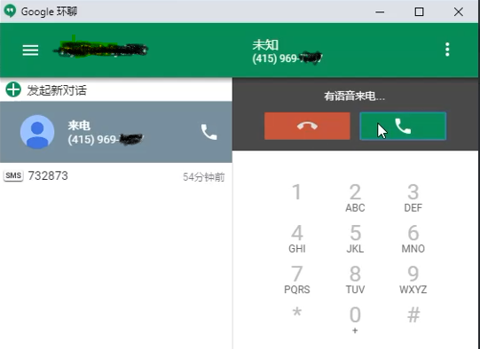
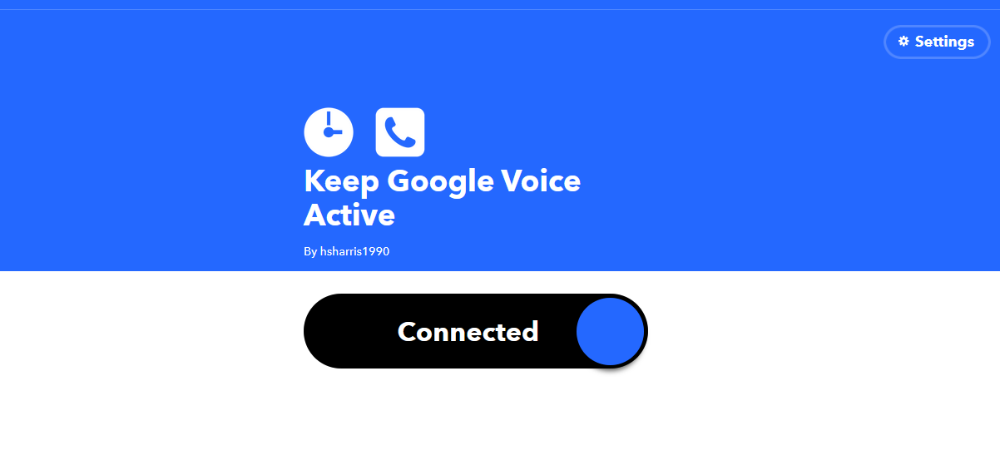

最近得到一个gv号码。很开心终于有国外的电话号码了。网上说几个月不使用，谷歌可能就会收回该号码，真的好让人担忧。拿到号，先给它上了2017的保险吧，我这里讲一下我遇到的阻碍。因为手机上没有安装Google服务，我选择在浏览器中操作。刚开始使用Firefox，注册IFTTT后用Keep google voice active去绑定号码一直收不到短信和语音。最后借助扩展加持的Google浏览器得以解决
点击扩展登录，然后重发验证码，以最快的手速去接听

因为语音是英文的，没听清楚也不要紧，我尝试了好多次才成功。当然还有2018的教程，具体内容看最下面的链接吧。
